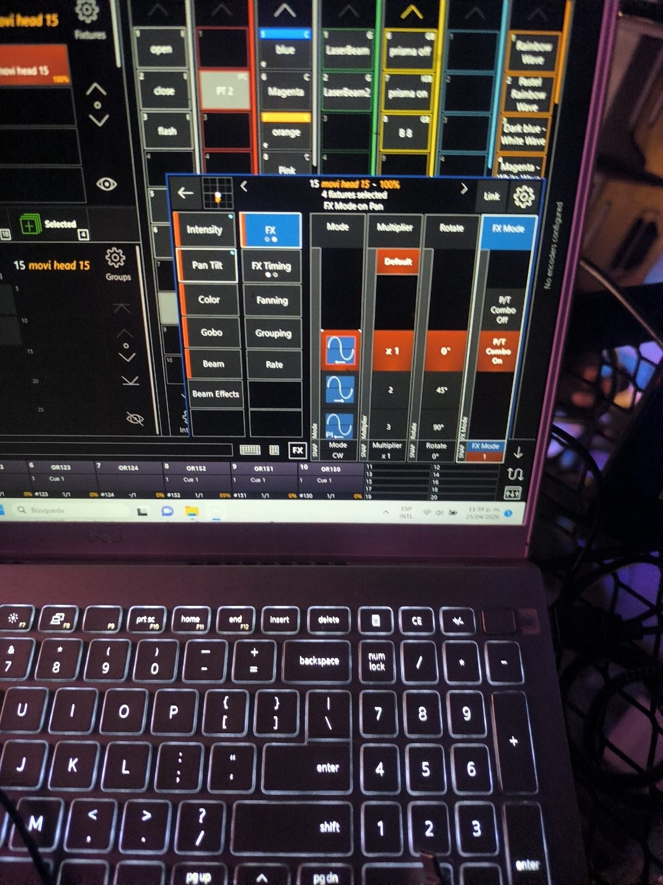

Lo que pidió el cliente
En el bar, el video (Resolume), las luces (Onyx) y el audio (Reaper) corrían en programas y equipos separados. Cada cambio de ambiente necesitaba a alguien en cada consola, y las luces no tenían idea de lo que pasaba en la pantalla.
Pedido
- Que las luces reaccionen a la música
- Que sigan a lo que pasa en la pantalla
- Manejar el show sin ir de consola en consola
✔ Entregado
- Los estrobos siguen en tiempo real a la capa de video
- El panel muestra el color que está saliendo en pantalla
- Escenas, flashes y pistas desde una tablet, o desde varias a la vez
De punta a punta, solo
Funcionando
La prueba de laboratorio antes de instalarlo: suena la música, Resolume pone el video y en la vista 3D de Onyx las luces responden.

De prototipo a producto
| Cue | Fecha | Qué pasó |
|---|---|---|
| 1 | 13 mar 2026 | Prueba en laboratorio con las tres consolas conectadas. |
| 2 | 14 mar 2026 | v1.0.0: primera versión funcionando en el bar. |
| 3 | abr 2026 | Programación de luces y ajuste en el sitio, con shows en vivo. |
| 4 | 8 nov 2026 | v3.0.0: producto para Multiaudio. Configuración en un archivo, panel sin internet, PIN, estado compartido, pruebas y un .exe listo para copiar. |
Un traductor en el medio
Cada programa habla su propio protocolo. Loop los escucha, aplica las reglas del show y mantiene un solo estado que ven todas las tablets.
src/show.ts · las luces siguen al video
/** La opacidad de la capa de video maneja los estrobos. */
onOpacity(opacity: number): void {
this.markResolumeOnline();
if (!this.state.automation) return;
const level = opacityToDmx(opacity);
if (level === this.lastStrobe) return; // no inundar la red
this.lastStrobe = level;
this.lights.setLevel(this.config.onyx.strobeCuelist, level);
}npm test
✔ la opacidad mueve los estrobos solo si cambia y si la automatización está activa
✔ los botones usan los comandos de la configuración
✔ rechaza botones y pistas que no existen
✔ el estado de mute es uno solo para todas las tablets
…
ℹ tests 12 pass 12 fail 0Pensado para un show en vivo
En un show no hay "volver a intentar". Estas decisiones salen de eso:
- La tablet manda botones, no comandos. El panel dice "escena 3" y el servidor decide qué sale según la configuración. Alguien en el wifi del club no puede mandarle cualquier cosa a las luces.
- Nada destructivo al arrancar. Si el PC se reinicia en pleno show, Loop vuelve sin tocar lo que está en escena. Limpiar las luces pide un segundo toque.
- Funciona sin internet. El panel no descarga nada de afuera: en un club la red suele ser solo local.
- Un paquete mal formado no tumba el show. Cada dato que llega por la red se valida; un mensaje OSC roto se descarta en vez de cerrar el programa.
- La lógica no depende de los equipos. Las reglas hablan con "luces" y "mezcla", no con Onyx o Reaper. Por eso se prueban sin equipos y se puede cambiar de consola sin reescribir el show.
Rider técnico
| Lenguaje | TypeScript sobre Node.js |
|---|---|
| Protocolos | OSC y Art-Net (entrada desde Resolume), UDP hacia Onyx y el PC de audio, OSC hacia Reaper, Socket.IO hacia las tablets |
| Dependencias | 3 en producción: express, osc, socket.io. El lector de Art-Net está escrito a mano |
| Pruebas | 12 con el test runner nativo de Node: reglas del show, configuración y paquetes Art-Net |
| Entrega | Un solo ejecutable (esbuild + Node SEA) con un JSON de configuración que se valida al arrancar |
| Seguridad | PIN opcional en el panel, solo botones definidos, validación de todo lo que llega por red |
| En uso | Bar con música en vivo · Multiaudio, empresa de producción de eventos |
¿Tienes equipos que no se hablan?
Integro hardware y software de eventos, y automatizo procesos de negocio. Escríbeme y lo vemos.